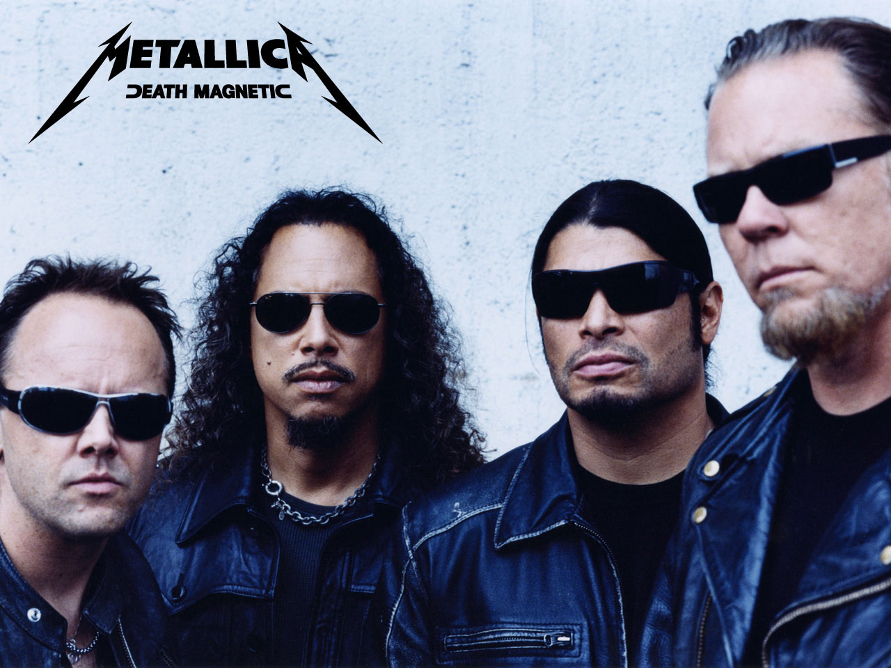
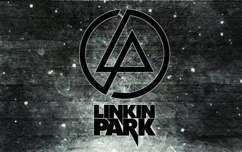
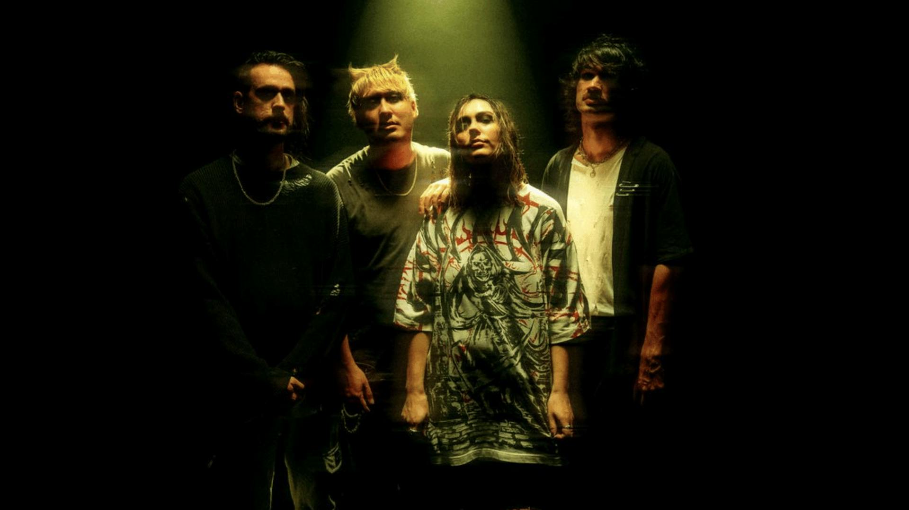
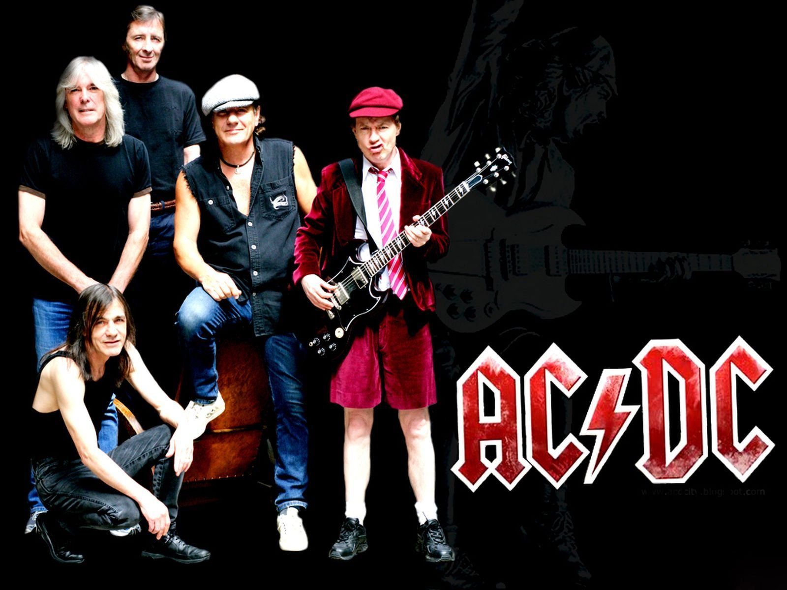
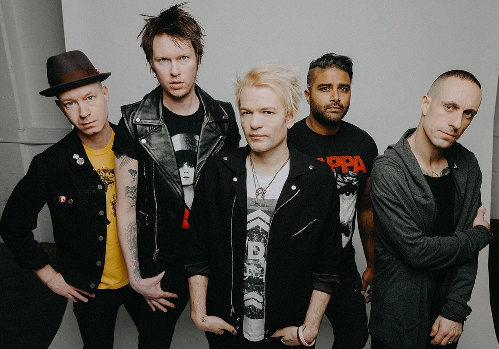
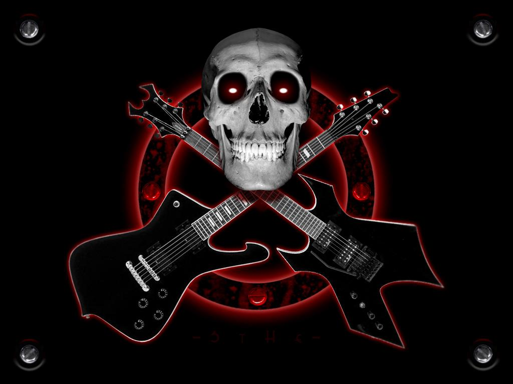

Metallica é uma banda americana de heavy metal. Foi formada em 1981 em Los Angeles pelo vocalista e guitarrista James Hetfield e pelo baterista Lars Ulrich, tendo sido baseada em São Francisco durante a maioria da sua carreira.

Site da bandaLinkin Park é uma banda de rock dos Estados Unidos formada em Agoura Hills, Califórnia. A formação atual da banda inclui o vocalista e multi-instrumentista Mike Shinoda, o guitarrista Brad Delson, o baixista Dave Farrell, o DJ Joe Hahn, a vocalista Emily Armstrong e o baterista Colin Brittain. A formação do grupo em seus sete primeiros álbuns de estúdio incluía o vocalista Chester Bennington e o baterista Rob Bourdon; após o suicídio de Bennington em julho de 2017, a banda entrou em um hiato por tempo indeterminado. Em setembro de 2024, Linkin Park retornou as atividades com as adições de Armstrong e Brittain. O vocalista Mark Wakefield e o baixista Kyle Christner são ex-membros da banda.

Site da bandaStand Atlantic é uma banda de pop punk australiana de Sydney, formada em 2014. A banda é composta pela vocalista/guitarrista Bonnie Fraser, guitarrista David Potter, baixista Miki Rich e baterista Jonno Panichi.

Site da bandaé uma banda australiana de rock formada em Sydney, Austrália em 1973, pelos irmãos escoceses Malcolm e Angus Young. O estilo musical da banda é normalmente classificado como hard rock e até mesmo blues rock.

Site da bandaFoi uma banda de punk rock canadense, de Ajax, Ontário, formada em 1996. A banda fez grande sucesso no começo dos anos 2000 com os hits "Fat Lip", "In Too Deep" e "Still Waiting".

Site da bandaClique na imagem para voltar para a primeira página.
